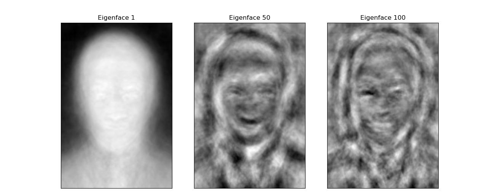
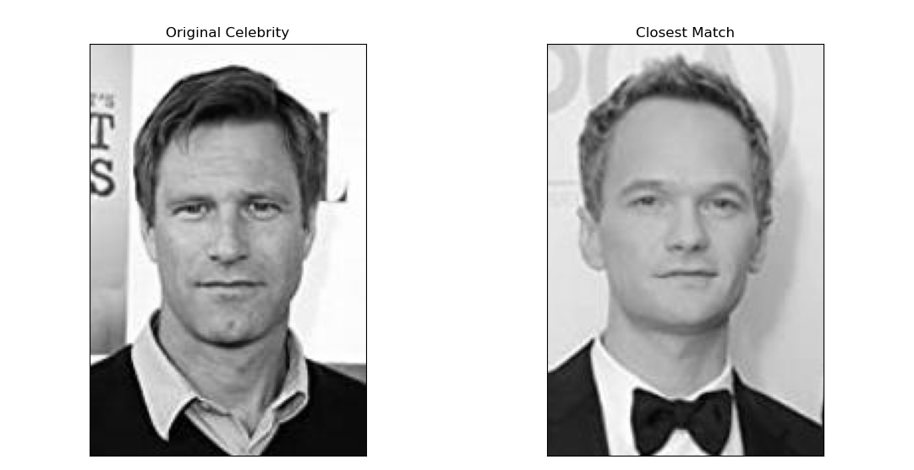

Performing Facial Recognition Without Machine Learning
Leveraging the Eigenfaces method to perform facial recognition without machine learning techniques | View Code
"The Matrix is everywhere. It is all around us. Even now, in this very room. You can see it when you look out your window, or when you turn on your television. You can feel it when you go to work, when you go to church, when you pay your taxes. It is the world that has been pulled over your eyes to blind you from the truth. "
- Morpheus, The Matrix
How to Manipulate Images
When we take a digital image, our cameras or devices capture it in the form of a grid of pixels, with each pixel assigned a color value. These values are then stored as a matrix on our computers, where the matrix is essentially a table of numbers that represent the colors of each pixel. The dimensions of this matrix are M x N x 3, where M is the height of the matrix, N is its width, and 3 represents the three color channels of red, green, and blue, which are used to create the full spectrum of colors visible to the human eye.
Each entry in the matrix corresponds to a specific pixel in the image, and the values of the entries indicate the intensity of the respective color channels at that pixel. By using matrix representation, computers can efficiently process and store images, and image compression techniques like SVD can help optimize this process by identifying and preserving the essential information in the matrix while reducing the overall file size.
How to Compare Images
The two-norm difference, mathematically represented as $\lVert g - f_i \rVert_2$, is a method of computing the distance between two vectors that provides a straightforward method for facial recognition or image comparison. We can thus compare an image to any other image with simple vector arithmetic by converting an image into a vector where each pixel becomes a component of the vector.
Specifically, if g represents a vector of our face, the $f_i$ that minimizes the two-norm difference $\lVert g - f_i \rVert_2$ will be the closest matching face. The norm, represented by $\lVert x \rVert_2$, measures the magnitude of a vector, and works in any dimension or size, even the several thousand dimensional vectors that represent images. In our case, the two-norm computes a distance equivalent to the largest singular value of the matrix formed by the images. The singular values are the square roots of the eigenvalues, which are fundamental attributes of a matrix and play a crucial role in image compression and dimensionality reduction.
However, calculating singular values is very computationally expensive. The Eigenfaces method reduces the computational cost of finding the closest matching face by focusing on only the most important features of each face.
The Eigenfaces Method
Mean Shifted Face
As the average of all the images in a dataset, the mean faces identifies the most common and least distinguishing features of a dataset. For facial recognition, it outputs the fuzzy, generic face shown below.
Before performing facial recognition on a particular image, the Eigenfaces algorithm first shifts the image by the mean face, emphasizing the unique characteristics of each person's face. By subtracting the mean face from each image, the algorithm highlights the distinguishing features of each entry, accentuating the unique traits that set each person apart. The mean face µ is calculated as the element-wise average of the $f_i$ images vectors stored in F.
This technique is crucial in the Eigenfaces method as it helps to eliminate any variations in lighting, orientation, and expression across different images, allowing the algorithm to focus on the inherent features of each face. The result is a more accurate and reliable facial recognition system that can quickly identify faces even under different lighting conditions or when wearing accessories like glasses or hats.
Computational Efficiency
To optimize efficiency and reduce space requirements, we can represent facial images with fewer values by projecting the image vectors onto a lower-dimensional subspace. This projection is possible by computing the SVD of the image matrix F, which results in a new matrix U whose first $r$ columns serve as a basis for F.
class FacialRec(object):
"""Class for storing a database of face images, with methods for
matching other faces to the database.
Attributes:
F ((mn,k) ndarray): The flatten images of the dataset, where
k is the number of people, and each original image is mxn.
mu ((mn,) ndarray): The mean of all flatten images.
Fbar ((mn,k) ndarray): The images shifted by the mean.
U ((mn,k) ndarray): The U in the compact SVD of Fbar;
the columns are the eigenfaces.
"""
# initialize the class with vectors of faces
def __init__(self, path='./celebrities/'):
"""Initialize the F, mu, Fbar, and U attributes.
This is the main part of the computation.
"""
# get F, compute the mean_face and compute Fbar
self.F, self.ind_name_map = get_faces(path=path)
self.mu = self.F.mean(axis=1)
self.Fbar = (self.F.T - self.mu).T
# get the SVD of Fbar and save U
U, Sigma, Vh = la.svd(self.Fbar, full_matrices=False)
self.U = U
def project(self, A, s):
"""Project a face vector onto the subspace spanned by the first s
eigenfaces, and represent that projection in terms of those eigenfaces.
Parameters:
A((mn,) or (mn,l) ndarray): The array to be projected.
s(int): the number of eigenfaces.
Returns:
((s,) ndarray): An array of the projected image of s eigenfaces.
"""
return self.U[:,:s].T @ A
This new matrix enables us to calculate the most accurate rank $r$ approximation $F_s$ of the original image matrix $F$. These projected vectors are aptly named "eigenfaces" because they are eigenvectors of $F \cdot F^T$ and share similarities with facial images. By using this technique, we can drastically reduce the storage space needed for facial recognition tasks and increase the efficiency of the algorithm.
Matching Faces
Suppose we have an unidentified face $g$, and we want to identify which image in our database is most similar to it. The first step is to compare the unknown face $g$ to each image in our database, which allows us to determine the closest match.
def find_nearest(self, g, s=38):
"""Find the index j such that the jth column of F is the face that is
closest to the face image $g$.
Parameters:
g ((mn,) ndarray): A flattened face image.
s (int): the number of eigenfaces to use in the projection.
Returns:
(int): the index of the column of F that is the best match to
the input face image $g$.
"""
# get F_hat
F_ = self.project(self.Fbar, s)
# get g_bar_hat
g_ = self.project(g-self.mu, s)
# find argmin ||F_ - g_||_2 and return it
diff = (F_.T - g_).T
j = np.argmin(np.linalg.norm(diff, axis=0))
# return the index of the closest face
return j
Next, we shift the face vector $g$ by the mean face of the database, which accentuates the unique features of the face. This shift results in a new vector $g$ that we can then project onto a lower-dimensional subspace using a predetermined number of eigenfaces. By doing this, we can represent the facial image with fewer values, which makes comparisons more efficient.
The next step is to compute the Euclidean distance (the most intuitive one) between the projected face vector $g$ and each of the image vectors in our database. We select the image vector $f_i$ that has the smallest Euclidean distance from $g$, which indicates the closest match.
Finally, we return the corresponding image $f_j$ as the best match for the unknown face $g$. This process is an example of how linear algebra can be used in facial recognition to efficiently and accurately identify unknown faces.
Winning a Hackathon
I took advantage of the Eigenfaces technique to build a program that won Best AI from BENlabs at the 2023 ACM YHack Hackathon. The Association for Computing Machinery (ACM) club chapter at my college is an organization designed to unify computer science students by hosting seminars, activities, and recruitment events on campus.

Every year they host a hackathon called the YHack where students have 24 hours to complete a project and demo it to a team of judges composed of university professors and industry professionals from the hosting company. If you are not familiar, a hackathon is simply a collaborative event where groups of people work together to create innovative software or hardware projects (not necessarily hacking) within a set time frame.
BENlabs is an AI company that empowers brands and creators to drive engaged human attention across social media, streaming, TV, music and film content. They were generous enough to host the hackathon with lots of pizza and prizes and chose the theme of “identity” for our competition.
Your Identity
I worked with two of my friends from my math classes, Jeff Hansen and Benj McMullin. We decided to build a face detection algorithm that uses the webcam to find the user’s celebrity lookalike and tell them about their identity.
It relied on OpenCV for some of the image processing, speech_recognition and pytts3 for a voice interface, tkinter for the graphical user interface, and the Eigenfaces method to perform the facial recognition. I explain this project in more detail in a dedicated post here if you’d like to learn more about some of the awesome packages we used.
Our innovative project began with crafting a user-friendly interface that displayed real-time images captured by the webcam, complemented by additional white space for auxiliary functions. Our program was designed to interact with users through a voice interface, initially prompting them to reveal their name. Using OpenCV, we implemented a face detection algorithm that captured images of users and compared them with a database of celebrity faces scraped from the top 1000 actors in Hollywood on IMDB. Our team took special care to center the faces of each celebrity in the database to construct a high-quality mean eigenface.
By implementing the Eigenfaces SVD technique, our program was able to accurately determine the closest actor to the user's captured image. After identifying the celebrity look-alike, the program utilized a text-to-speech engine to describe the results, along with estimates of their age and gender powered by pre-trained models from OpenCV. To further enhance the experience, the program utilized openAI GPT-3 API to generate a unique and captivating story about the person, and finished with a fond farewell.
Conclusion
Participating in the hackathon was an exciting experience, especially because I was able to apply one of the skills I had learned in class to a project I was truly invested in. My teammate Jeff and I managed to quickly implement the eigenfaces facial recognition feature, which allowed us to spend the rest of the time creatively adding more features like age and gender detection.
One of the most engaging experiences during the hackathon was coding collaboratively - an opportunity I hadn't had very often before. It was refreshing to have a partner and be able to bounce ideas off each other in contrast to the dozens of individual projects I have worked on before for my classes. As we developed our project, Jeff focused primarily on the interface and overall integration, while I handled each of the various functionalities. Our partnership allowed me to develop specific parts of the project in isolation, which helped me to thoroughly test different aspects and features.
Whenever we ran into roadblocks or encountered bugs, we were able to quickly find and fix them with the help of a second set of eyes. This interactive process was incredibly rewarding and allowed us to focus on different aspects of the project without feeling overwhelmed.
Although I was initially nervous about dedicating so much time on the weekend and neglecting my looming math exams, the hackathon was an incredibly fun and rewarding experience that I am glad to have been a part of. Winning a prize - a pretty sweet phone holder for my car - was just the icing on the cake. It was an exciting and enriching experience that I will never forget, and I’m glad I took the time out of my week for this unique opportunity. For more details about implementing the Eigenfaces method, visit my GitHub.